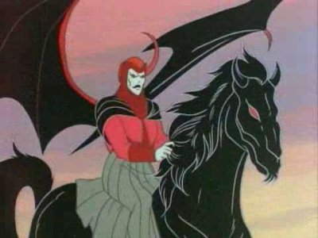

É uma série de animação escrita por Michael Reaves, coproduzida pela Marvel Productions, TSR e Toei Animation, baseada no jogo de RPG homônimo. A série possui 27 episódios divididos em três temporadas, transmitidas originalmente entre os anos de 1983 e 1985 pela rede de televisão estadunidense CBS. A animação da série ficou a cargo da empresa japonesa Toei Animation. A série estreou no Brasil em 1985, no programa Balão Mágico da Rede Globo.
A série focou em um grupo de seis amigos que são transportados para o reino titular e seguiram suas aventuras enquanto tentavam encontrar um caminho para casa com a ajuda de seu guia, o Mestre dos Magos (Dungeon Master no original).
Inicialmente, a série foi um projeto da Marvel Productions chamado Swords and Sorcery, porém, não foi aprovado pela NBC, com isso, a produtora resolveu assinar um contrato de licença com a TSR para utilizar a marca Dungeons & Dragons, o projeto foi reformulado por Dennis Marks e Mark Evanier, sendo lançado em setembro de 1983 na CBS.
A série mostra uma história de seis crianças americanas dos anos 1980 que tentam voltar a seu mundo após chegarem ao Reino de Dungeons & Dragons em um passeio de montanha russa. O desenho possui várias referências ao universo do jogo de role-playing game Dungeons & Dragons.
Apesar do enorme sucesso, especialmente no Brasil, a série foi cancelada. O criador Gary Gygax deu uma explicação para o cancelamento em entrevista exclusiva para a edição número 3 da revista Herói 2000 (novembro de 1999, Conrad Editora), escrita pelo jornalista brasileiro Pablo Miyazawa:
"Em 1985, a equipe responsável pelo desenho se reuniu com os executivos da temporada seguinte. Os seis jovens – mais velhos e mais experientes – seriam chamados de volta ao mundo da Caverna do Dragão pelo Mestre dos Magos. Foram concebidos três scripts do desenho, e eu até aprovei um deles. Mas algumas dificuldades surgiram. A D&D Corp. fechou e a CBS com a Marvel decidiram não continuar mais com o desenho. A nova série foi cancelada antes mesmo de ser produzida."
Não há consenso sobre qual foi o cenário de Dungeons & Dragons utilizado para ambientar o seriado. Greyhawk, um dos primeiros cenários de Dungeons & Dragons e cuja autoria é de Gary Gygax, um dos criadores do desenho animado, teve alguns de seus personagens utilizados ao longo da série, dentre os quais: Warduke (Duque Guerreiro), Tiamat, o Beholder (Observador) e Lolth (os três últimos passaram a, posteriormente, compor o universo básico de Dungeons & Dragons).
Por outro lado, Hank e Bobby são citados no vídeo-jogo para computador Baldur's Gate 2, que é ambientado no mundo de Forgotten Realms.
O mundo de Caverna do Dragão é simplesmente chamado de "O Reino" (Realm of Dungeons & Dragons, no original). Há diversas cidades pequenas (vilarejos ou burgos) espalhadas pelo Reino, chefiadas por pessoas denominadas "prefeitos" (ou burgo-mestres). Há cidadelas maiores, cercadas por grandes muros e governadas como um principado ou um reino. A maioria das aglomerações urbanas tem ciência do Vingador e muitas demonstram temor e obediência a ele. No geral, essas sociedades organizam-se como feudos ou monarquias absolutistas, apesar de, especialmente nos pequenos vilarejos, ser observada uma organização mais democrática. Entre os reis e rainhas que aparecem na série, destacam-se: Rahmoud, Travar, Tasmira, Solinara, Syrith, Zinn e Varen, além do Vingador.
No Reino de Caverna do Dragão, há outras armas do poder além das que são cedidas aos protagonistas pelo Mestre dos Magos. A origem de seu poder, diferentemente de outras armas mágicas quaisquer, está no Cemitério dos Dragões, guardadas, juntamente aos ossos dos antigos dragões, pela deusa-dragoa Tiamat, que ali vive. Lá, as armas do poder apresentam performance superior ao normal. Também, a depender das armas do poder disponíveis, é possível combinar seus poderes para abrir um portal que leve ao Cemitério dos Dragões.
A energia das armas do poder dura em torno de trezentos anos, após o que precisam ser recarregadas em locais como o Salão dos Ossos: um grande palácio-mausoléu, onde haviam sido depositados os restos mortais de poderosos guerreiros. Em seu centro, um altar no formato de uma enorme caveira era capaz de reenergizar as armas do poder. O local foi destruído pelo Vingador após os protagonistas ali recarregarem suas armas. Outros locais onde é possível recarregar as armas do poder são o Portal do Amanhecer, no Mundo Subterrâneo, e o Cemitério dos Dragões.
O Vingador ambiciona as armas dos garotos para ampliar seus poderes e assim derrotar Tiamat, abrindo caminho para dominar o mundo; existem outros que as quer, como Kelek o Mago. Nas poucas vezes em que conseguiu capturar as armas, o Vingador as segurava em uma mão, enquanto canalizava sua magia com a outra. Tiamat apresenta especial vulnerabilidade quando é atingida por essas rajadas concentradas de magia unificadas ao poder do Vingador. O Mestre dos Magos também já fez uso do poder combinado das armas dos garotos.
As armas do poder não apresentam seus poderes em nossa dimensão. Algumas são capazes de autorreparar-se se quebradas, como o bastão de Diana e o tacape de Bobby.
Ao longo do seriado, outras armas mágicas são encontradas, mas são extremamente raras. Não se tem certeza, todavia, se todas são especificamente armas do poder, como as dos garotos, ou se são artefatos mágicos diversos.
Espada: usada pelo Duque Guerreiro, é capaz de congelar instantaneamente aquilo que golpeia.
Espada: usada por Dekion, um cavaleiro celestial do Grupo Místico, é capaz de lançar rajadas de energia.
Martelo de Ouro: usado pelo paladino Coração Forte, é capaz de rebater rajadas mágicas, além de apresentar um poder de destruição semelhante ao tacape de Bobby e uma esfera de proteção similar ao escudo de Eric.
Elmo Alado: usado pelo paladino Coração Forte, não se sabe quais são seus poderes, pois não chega a ser utilizado durante o episódio.
Cimitarra: usada pelo rei Rahmud, é capaz de emitir ondas sonoras destruidoras quando vibrada.
Espada: é capaz de cortar facilmente materiais muito duros, como rocha.
Tridente: é capaz de disparar rajadas de energia.
Rede: é capaz de regenerar a saúde de quem for coberto por ela.
Chicote: é capaz de criar um chicote energético de comprimento variado.
Bastão Mágico é capaz de emitir rajadas de energia.
Mangual: é capaz de criar furacões.
Elmo de Chifres: usado por Uggar, é capaz de disparar rajadas de energia.
Os seis garotos que brincavam no carrinho de montanha-russa quando foram transportados para o Reino são os protagonistas da série.
Hank (guarda): com quinze anos de idade, assumiu a função de líder, ainda que hesitante. Nutre afeição por Sheila e sente culpa por ter permitido que seus amigos entrassem no Reino. Recebeu um arco mágico capaz de criar flechas energéticas, que podem ser esticadas, dobradas ou até mesmo utilizadas como corda. Seu maior medo é não ser um bom líder.
Eric (cavaleir): com quinze anos de idade, filho de pais ricos, é constantemente arrogante e egoísta, preocupado mais consigo e com uma chance real de retornarem para casa. Devido a sua natureza, coloca o grupo muitas vezes em perigo, mas, não raro, arrisca-se para salvá-los. Recebeu um escudo que o protege contra ataques mágicos ou físicos; esse escudo pode criar campos de força para defender uma pequena área em seu entorno. Ao longo do seriado, Eric tem suas feições transformadas como consequência de seu comportamento: um burro, uma fera do pântano, um macaco de cara azul e até um mestre dos magos. Apesar de detestar o mundo de Caverna do Dragão, já demonstrou interesse em ficar no Reino, além de ter uma queda por Karena, irmã do Vingador. Parece ser capaz de entender o que Uni diz. Seu maior medo é ser motivo de piada.
Diana (acrobata): com catorze anos de idade, é extremamente confiante e centrada, já apresentando habilidades acrobáticas no mundo real. Recebeu um bastão, usado em saltos e acrobacias. Tão flexível quanto as flechas de Hank, o bastão pode regenerar-se se quebrado. Seu maior medo é envelhecer. Seu pai é astrônomo (astrólogo na dublagem brasileira). Sua classe em D&D era ladrão-acrobata (subclasse de ladrão ou ladino) introduzida por Gary Gygax em 1983, na terceira edição de Dungeons & Dragons (2000), deixou de ser uma classe básica, a classe reaparece no livro "Song and Silence" de 2004 como classe de prestígio (uma classe que só pode ser atingida após oito níveis, no desenho, Diana está no primeiro nível), a personagem é homenageada, o livro traz uma Personagem não jogável chamada Diana. Em, Dungeons & Dragons 3.5 – Animated Series Handbook publicado em 2006, ela é classificada como Monja, uma classe das primeiras edições do jogo que foi reintroduzida na terceira edição, a classe é associada com habilidades em artes marciais.
Sheila (ladina): com treze anos de idade, é a irmã mais velha de Bobby, o qual procura proteger. Corresponde à afeição que Hank tem por ela. Recebeu uma capa com capuz que lhe dá invisibilidade, nos livros de D&D, capas parecidas são usadas por elfos. Compreende a língua das fadas. Seu maior medo é ficar sozinha.
Presto (mago): com catorze anos de idade, seu nome verdadeiro é Albert, sendo Presto uma alcunha criada por colegas de escola, ao tentar fazer truques de mágica. É tão inseguro quanto um garoto recém-saído da infância e sua falta de habilidade física e timidez lhe dão o estereótipo do nerd. Suas trapalhadas, quando não catastróficas, costumam ser motivo de chacota do grupo, especialmente de Eric. Já demonstrou vontade de ficar no Reino. Recebeu um chapéu de feiticeiro, do qual podem ser retirados objetos e magias aleatórias. O poder do chapéu não é inteiramente dominado por Presto, que em determinada altura do seriado passa a recitar versos ao utilizar a arma. No mundo real, Presto não gostava das aulas de educação física e já gostava de realizar truques de magia. Seu maior medo é perder seus óculos e não conseguir enxergar. No Reino, sua grande paixão foi Varla.
Bobby (bárbaro): com oito anos de idade, é irmão caçula de Sheila. Impetuoso, demonstra temeridade inconsequente, o que por vezes cria problemas para o grupo. Sabe da afeição que Hank sente por sua irmã, mas isso não o impede de tê-lo como amigo. Não costuma ter paciência com Eric e afeiçoou-se de maneira especial por Uni. Recebeu um tacape, cujo golpe, muito forte, é capaz de quebrar pedras e criar pequenos abalos sísmicos. Parece compreender a linguagem dos unicórnios, ou, pelo menos, o que Uni tenta dizer. Em nossa dimensão, havia-se apaixonado por uma menina chamada Terry, que foi parar no Reino da mesma maneira que Bobby. Seu maior medo é ser tratado feito criança.
Para além dos seis jovens, o seriado conta com uma pequena gama de personagens secundárias, porém constantes:
Mestre dos Magos: espécie de mestre de RPG (Dungeon Master), é o guia dos garotos. Não se conhece seu nome verdadeiro, sendo Mestre dos Magos uma espécie de cargo. Suas informações cifradas ocultam suas reais intenções e por vezes seus motivos se demonstram dúbios. No intento de ajudar o grupo a retornar a seu mundo, acaba por utilizá-los para enfrentar as forças ocultas do Reino, especialmente o Vingador, e assim restaurar o equilíbrio entre ordem e caos. Zandora, antiga amiga do Mestre dos Magos, compartilha grande semelhança física com ele. O Mestre dos Magos possui uma espécie de energia vital que, se esgotada, faz com que ele morra e seu corpo desapareça.
Uni: um filhote fêmea de unicórnio aparentemente órfã,o que se torna a mascote das personagens e tem afeto especial de Bobby. Não domina plenamente os poderes mágicos auferidos por seu chifre, especialmente a capacidade de se teletransportar uma vez ao dia. Consegue esboçar algumas palavras em meio ao seu balido típico. Por pertencer ao Reino, não pode acompanhar os garotos de volta ao mundo real.

O Vingador montado em um pesadelo. Apesar de não ter asas, os pesadelos são capazes de voar, ao contrário do Vingador, incapaz de voar mesmo tendo asas.Vingador: um feiticeiro maléfico, opressor de diversos povos e raças, com grandes habilidades místicas. Ao longo do seriado, o Mestre dos Magos dá a entender que o Vingador já foi uma boa pessoa há muito tempo, e que o vilão se demonstrou o maior dos erros do Mestre. Ao final da batalha no Cemitério dos Dragões, o Mestre dos Magos dá a entender que é pai do Vingador, algo confirmado no roteiro do episódio Requiem. O Vingador tenta dominar plenamente o Reino e derrotar Tiamat e, para tanto, deseja as armas do poder dos garotos para ampliar seus poderes. Entre as criaturas que compõem seu exército, encontram-se orcs. O Vingador tem mais de mil anos e é especialmente vulnerável a um tipo de joia conhecida como coração-de-pedra. Aparentemente, o Vingador usufrui de algum tipo de imortalidade que lhe garante o retorno à vida mesmo quando seu corpo é, temporariamente, destruído. Ao longo do seriado, diferentes castelos são mostrados como morada do Vingador; especificamente em um, é possível ver uma estátua do Vingador com dois chifres. Apesar de sua natureza malévola, o Vingador foi capaz de demonstrar certa justeza para com os garotos algumas vezes. Ele serve a uma entidade conhecida no mundo real como O Mal e cognominada no Reino como Aquele-Cujo-Nome-Não-Deve-Ser-Pronunciado: uma entidade multidimensional de enormes poderes. Diferentemente das armas do poder ou de criaturas advindas do Reino, como Uni, o Vingador é capaz de invadir o mundo real e fazer uso de sua magia. Frequentemente, cavalga uma criatura cuja raça é denominada "pesadelo". Apesar de ter um par de asas, o Vingador não é capaz de voar, diferentemente de sua montaria, que, por sua vez, não possui asas. Ele tem uma irmã chamada Karena, que também tem poderes mágicos, mas não é revelado se Karena também seria filha do Mestre dos Magos.
Tiamat: é uma terrível deusa-dragoa de cinco cabeças, cada qual representando uma das raças de dragões cromáticos da primeira versão de D&D: vermelha, azul, verde, preta e branca. Tiamat vive no Cemitério dos Dragões, como guardiã dos ossos dos antigos dragões que ali se dirigiram para morrer, bem como de algumas armas mágicas como as que o Mestre dos Magos deu aos garotos. É temida até pelo Vingador. Mesmo Tiamat é vulnerável à dragonbane, uma erva letal para os dragões. Também, é capaz de realizar viagens interdimensionais, criando portais. Tiamat compreende a linguagem comum dos humanos.
Demônio das Sombras: outro personagem recorrente, serve ao Vingador como seu informante. Apenas mais adiante na série passa a interagir com os garotos, inicialmente os espreitando sem que eles tenham ciência. É extremamente leal a seu mestre, pelo qual nutre profundo temor.